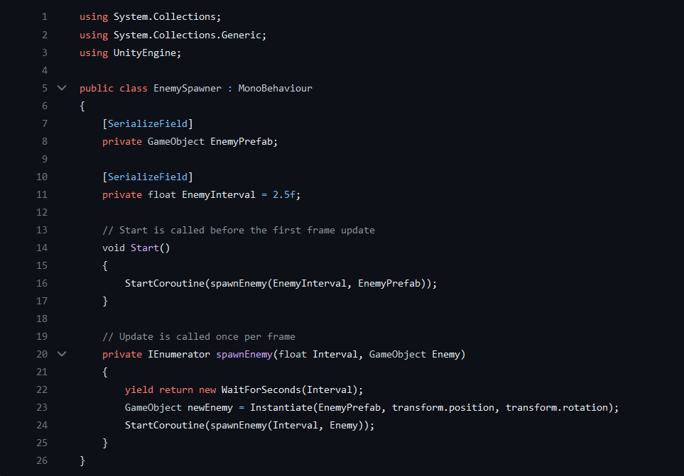
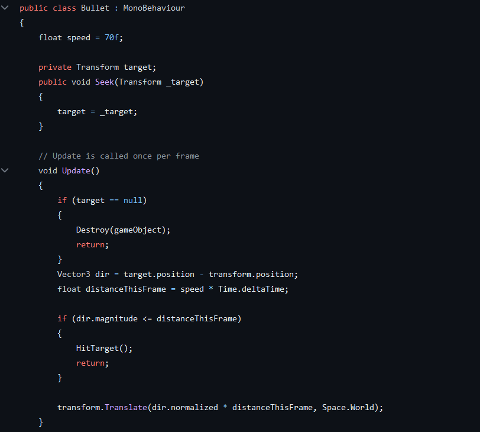
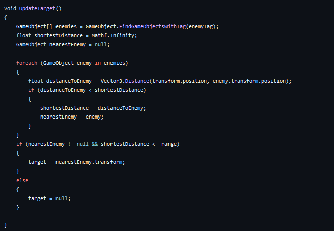
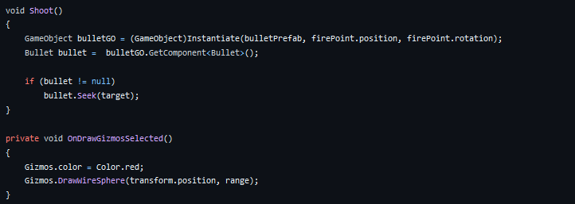

Tower Defense
Project Status:
Project Type:
Project Duration:
Software Used:
Languages Used:
Primary Role(s):
Team:
Completed
College Project
8 Weeks
Unity
C#
Game Developer
1 Developer
About Tower Defense
My First Tower Defense Game represents my initial steps into the world of game development, reflecting my passion for creating interactive experiences. Despite its simplicity, the project embodies my dedication to learning and my enthusiasm for crafting engaging gameplay. As I continue to evolve as a developer, I am eager to embark on new challenges and create even more captivating and innovative games in the future.
My Features
- Enemy Waypoints
- Turrets
- EnemySpawner
- Shop
- Nodes
- UI
Intro
This project was my first period of year 2 when I started Game Development.
Development
Throughout the development phase, ensuring seamless integration of diverse game components such as tower mechanics, enemy behavior, and wave spawning required meticulous debugging and persistent testing. Handling complex AI behaviors and optimizing game performance were essential aspects that I focused on during the development process. The iterative approach adopted during the game's construction allowed for thorough testing and debugging, resulting in a robust and engaging gameplay experience for users. Addressing performance bottlenecks and refining gameplay mechanics were integral parts of the development journey.
Picture of EnemySpawner code
In the code you can see the way the enemie prefabs are spawned and the rates which you can customize in the in specter
Picture of the Bullet Code
In this code you can see that the bullet tracks the enemy closest to him and then deals damage.
Picture of the turret target code
In this code you can see that the turret tracks the closest enemy to him.
Picture of the turret shoot code
In this code you can see that the bullet is instantiated from the barrel of the turret and shoots it at the enemy.
Picture of the gameplay

In this screenshot you can see the gameplay.
Conclusion
Developing the Tower Defense game was a valuable learning experience, showcasing my ability to navigate complex game development challenges. The project highlighted the significance of comprehensive testing, effective debugging, and a deep understanding of Unity and C# programming principles.